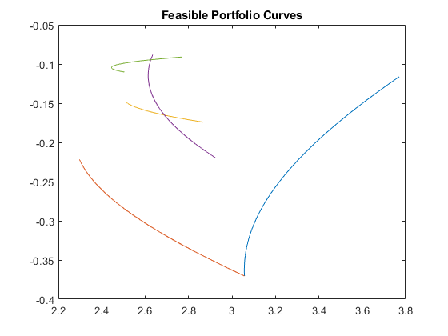
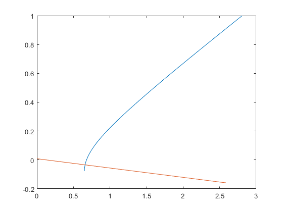
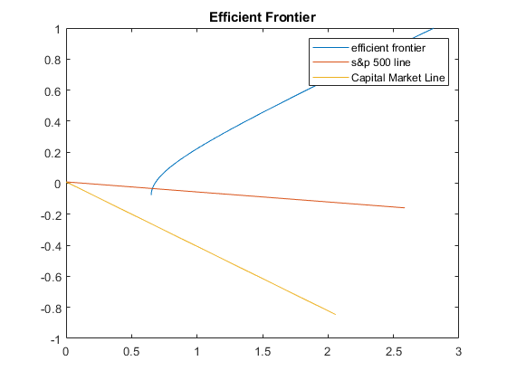
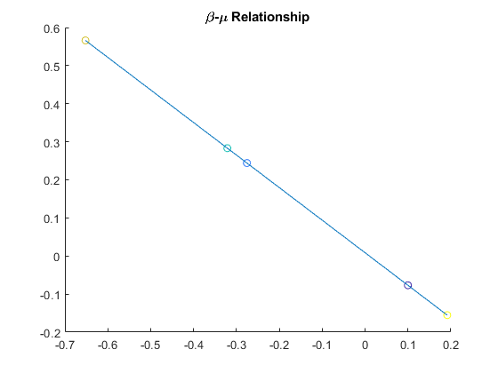
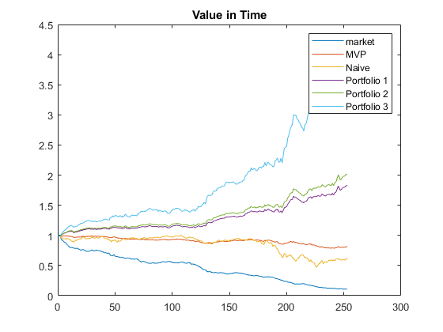

Contents
load('FF48_2008.mat')
FF48 = cell2mat(struct2cell(struct));
load('sp500_2008.mat')
sp500 = struct.return;
R = 0.00846;
a
[M,N] = size(FF48);
one = ones(48,1);
mean_FF48 = mean(FF48,2);
cov_FF48 = mycov(FF48);
b
w_naive = linspace(1/48,1/48,48).';
mu_naive = mean(mean_FF48);
risk_naive = sqrt(w_naive.'*cov_FF48*w_naive);
mu_mkt = mean(sp500,2);
var_mkt = mycov(sp500);
risk_mkt = sqrt(var_mkt);
risk_mvp = 1/sqrt(one.'*inv(cov_FF48)*one);
w_mvp = risk_mvp^2*inv(cov_FF48)*one;
mu_mvp = mean_FF48.'*w_mvp;
figure();
for i = 1:5
choice = randperm(48,2);
w_two = [linspace(0,1,1000);1-linspace(0,1,1000)];
mean_two = mean_FF48(choice,:);
mu = mean_two.'*w_two;
cov_two =mycov(FF48(choice,:));
sigma_temp = sqrt(w_two.'*cov_two*w_two);
sigma = diag(sigma_temp).';
plot(sigma,mu);
hold on
end
title('Feasible Portfolio Curves')

c
returns = [mu_mvp:0.001:1];
m = [mean_FF48,one];
B = m.'*inv(cov_FF48)*m;
risk=[];
for r=returns
risk = [risk,sqrt([r,1]*inv(B)*m.'*inv(cov_FF48)*m*inv(B)*[r,1].')];
end
figure();
plot(risk,returns);
hold on
plot([0,risk_mkt],[R,mu_mkt])
hold on

d
ports = sort(randperm(size(returns,2),3));
port1 = [returns(ports(1)), risk(ports(1))];
port2 = [returns(ports(2)), risk(ports(2))];
port3 = [returns(ports(3)), risk(ports(3))];
w1= inv(cov_FF48)*m*inv(B)*[port1(1),1].';
w2= inv(cov_FF48)*m*inv(B)*[port2(1),1].';
w3= inv(cov_FF48)*m*inv(B)*[port3(1),1].';
convex_comb = linsolve([w1,w3],w2);
con = [w1,w3]*convex_comb-w2;
convex_test = all(convex_comb>0)&all(con<1e-10)
convex_test =
logical
1
f
m_ex = m(:,1)-R;
w_m = 1/(ones(1,48)*inv(cov_FF48)*m_ex)*inv(cov_FF48)*m_ex;
mu_m = mean_FF48.'*w_m;
risk_m = sqrt(w_m.'*cov_FF48*w_m);
plot([0,risk_m],[R,mu_m]);
legend('efficient frontier','s&p 500 line','Capital Market Line');
title('Efficient Frontier')
slope = (mu_m-R)/risk_m;
fprintf('mu = %d * sigma + %d\n',slope,R)
mu = -4.154235e-01 * sigma + 8.460000e-03

g
beta_mvp = beta(cov_FF48,w_mvp,w_m)
beta_1 = beta(cov_FF48,w1,w_m)
beta_2 = beta(cov_FF48,w2,w_m)
beta_3 = beta(cov_FF48,w3,w_m)
beta_naive = beta(cov_FF48,w_naive,w_m)
figure();
c = linspace(1,10,5);
scatter([beta_mvp,beta_1,beta_2,beta_3,beta_naive],[mu_mvp,port1(1),port2(1),port3(1),mu_naive],[],c)
hold on
plot([beta_mvp,beta_1,beta_2,beta_3,beta_naive],[mu_mvp,port1(1),port2(1),port3(1),mu_naive])
title('\beta-\mu Relationship')
beta_mvp =
0.0998
beta_1 =
-0.2756
beta_2 =
-0.3212
beta_3 =
-0.6521
beta_naive =
0.1916

h
K_m = (FF48.'*w_m*0.01+1).';
K_mvp = (FF48.'*w_mvp*0.01+1).';
K_naive = (FF48.'*w_naive*0.01+1).';
K_1 = (FF48.'*w1*0.01+1).';
K_2 = (FF48.'*w2*0.01+1).';
K_3 = (FF48.'*w3*0.01+1).';
time = [0:1:size(K_m,2)];
money_m = money(K_m);
money_mvp = money(K_mvp);
money_naive = money(K_naive);
money_1 = money(K_1);
money_2 = money(K_2);
money_3 = money(K_3);
figure();
plot(time,money_m);
hold on
plot(time,money_mvp);
hold on
plot(time,money_naive);
hold on
plot(time,money_1);
hold on
plot(time,money_2);
hold on
plot(time,money_3);
title('Value in Time');
legend('market', 'MVP', 'Naive', 'Portfolio 1', 'Portfolio 2', 'Portfolio 3')
function c = mycov(data)
c = 1/(size(data,2)-1)*(data*data.'-mean(data,2)*mean(data,2).');
end
function b = beta(c,w_v,w_mkt)
b = (w_mkt.'*c*w_v)/(w_mkt.'*c*w_mkt);
end
function mon = money(K)
day = size(K,2);
base = ones(1,day);
K_ = zeros(1,day);
K_(1) = K(1);
for i = 2:day
K_(i) = K_(i-1)*K(i);
end
mon = [1,base.*K_];
end
